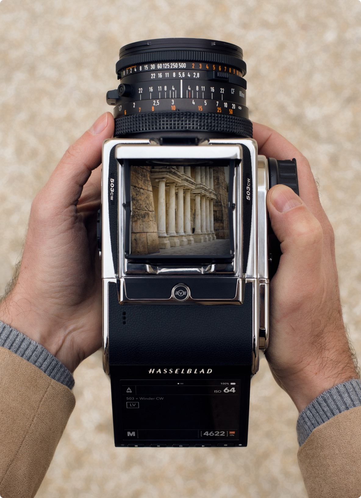
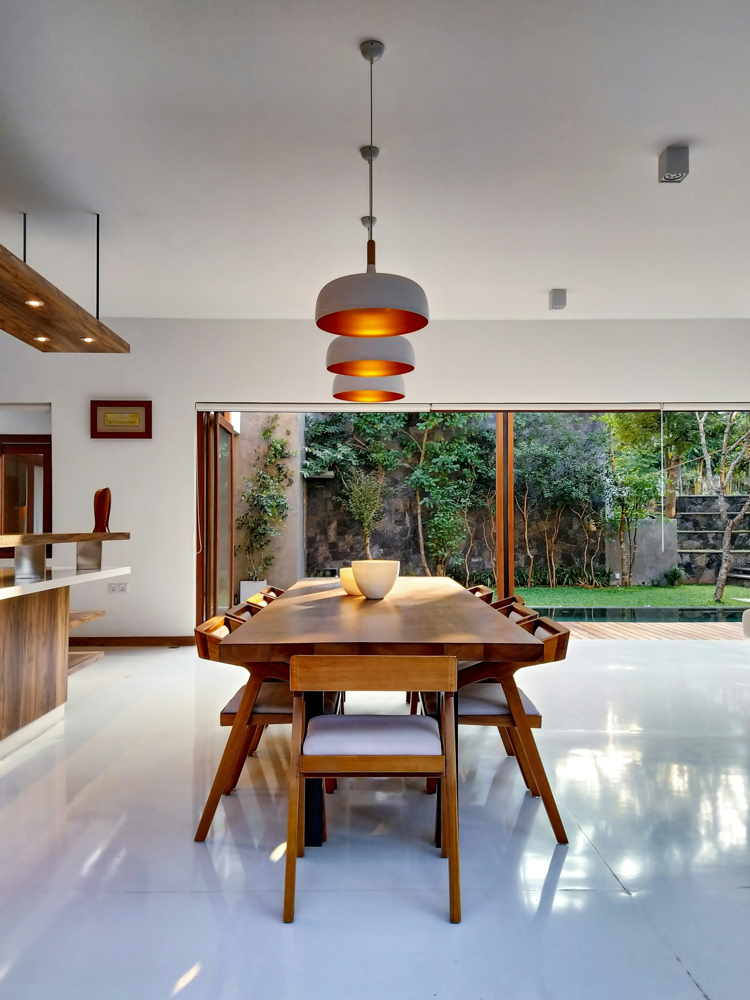

PORTFOLIO — 2026
코드로 짓는 인터페이스
INTERFACES, BUILT IN CODE.
디자인과 구현 사이의 거리를 없애는 일을 합니다. 화면을 그리는 데서 멈추지 않고, 움직임과 반응까지 직접 코드로 짓습니다. 아래는 그 과정의 기록입니다.



PROFILE — 허강범 HEO GANGBEOM
덜어내며 짓습니다
화면을 그리는 디자이너이자, 그 화면을 직접 코드로 짓는 사람입니다. 사용자의 마찰을 줄이는 일과, 그 해법을 60fps로 매끄럽게 구현하는 일 사이를 오가는 것을 좋아합니다. 지금은 더 좋은 인터페이스를 만들 팀을 찾고 있습니다.
DESIGN
UX 리서치 · 정보구조 · UI · 디자인 시스템 · 프로토타이핑
BUILD
HTML · CSS · JavaScript · GSAP · 반응형 · 접근성
TOOLS
Figma · Protopie · Git · Adobe